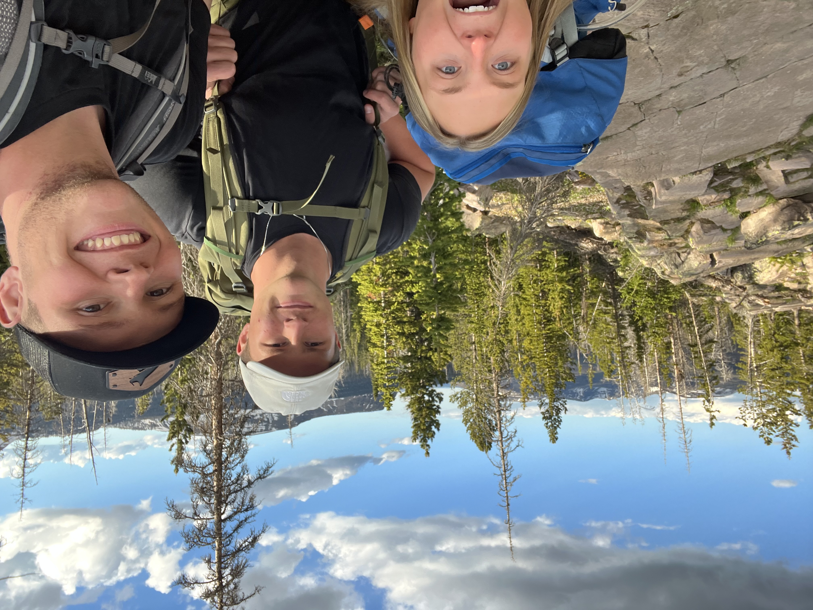
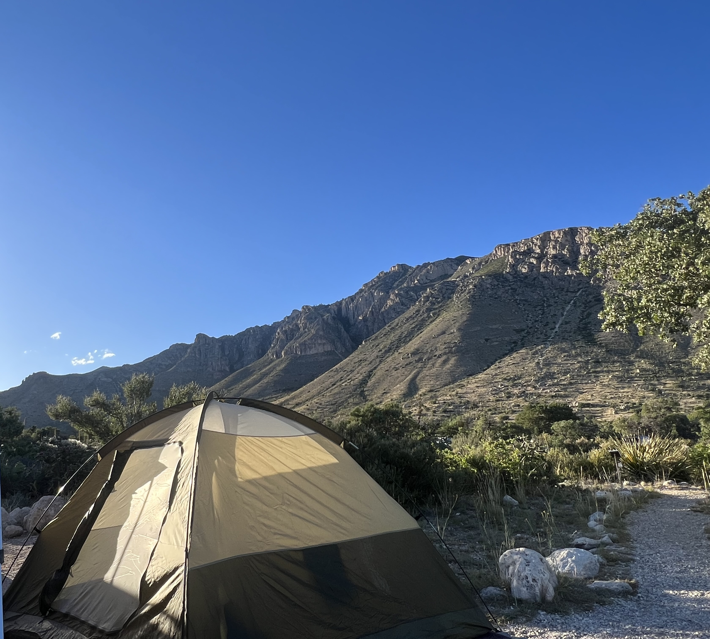

Watch this video about backpacking!
Backpacking is a popular form of travel that allows individuals to explore new destinations while carrying all their essentials in a backpack. It offers a unique and immersive experience, allowing travelers to connect with local cultures, nature, and fellow adventurers. Here are some tips for mastering the art of backpacking:
- Pack Light
- Choose the Right Backpack
- Plan Your Route
- Research the destinations you want to visit
- Research the best times to go
- Research any necessary permits or visas
- Embrace Local Culture
- Stay Safe
- Be Open-Minded
One of the key principles of backpacking is to pack light. Only bring what you truly need and avoid overpacking. This will make it easier to carry your backpack and allow for more flexibility during your travels.
Invest in a good quality backpack that fits well and has enough capacity for your needs. Look for features such as padded straps, multiple compartments, and a sturdy frame to ensure comfort and durability.
Click here to see some backpack suggestionsBefore setting off on your backpacking adventure, take the time to plan your route:
This will help you make the most of your trip and avoid any unexpected challenges.
Here are some of my favorite pictures from my trips!


One of the joys of backpacking is immersing yourself in local culture. Take the time to learn about the customs, traditions, and language of the places you visit. This will enhance your experience and allow you to connect with locals on a deeper level.
While backpacking can be an incredible adventure, it's important to prioritize safety. Always be aware of your surroundings, keep your belongings secure, and trust your instincts. It's also a good idea to have a backup plan in case of emergencies.
This chart shows some of the main causes of deaths in U.S National Parks. Most are related to backpacking incidents.

Backpacking often involves stepping out of your comfort zone and embracing new experiences. Be open-minded and willing to try new things, whether it's trying local cuisine, participating in cultural activities, or meeting new people. This will enrich your journey and create lasting memories.
Thank you for visiting my page!
Back to top